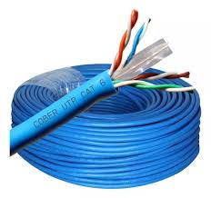
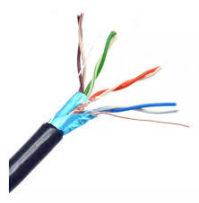

El cable UTP (Unshielded Twisted Pair o Par Trenzado No Blindado) es un tipo de cable ampliamente utilizado en redes de telecomunicaciones y conexiones de datos. Está compuesto por pares de hilos de cobre trenzados entre sí, lo que ayuda a reducir interferencias electromagnéticas externas. ¿Para qué sirve? Redes LAN (Local Area Network): Es el cable más común para conectar computadoras, routers y switches en redes locales. Transmisión de datos: Permite la transferencia de información entre dispositivos, como archivos, imágenes y videos. Telefonía: También se utiliza en sistemas telefónicos para transmitir señales de voz. Conexiones económicas: Es una opción accesible y fácil de instalar, ideal para oficinas, hogares y pequeñas empresas.
El cable STP (Shielded Twisted Pair o Par Trenzado Blindado) es similar al cable UTP, pero cuenta con una capa de protección adicional, que puede ser de metal o papel metálico, para reducir aún más las interferencias electromagnéticas externas. ¿Para qué sirve? Protección avanzada: Es ideal en ambientes donde hay alta exposición a interferencias electromagnéticas o radiofrecuencia, como fábricas o laboratorios. Redes LAN: Se utiliza en redes locales como alternativa al UTP cuando se requiere mayor seguridad en la transmisión de datos. Estabilidad en la señal: Ofrece una conexión más estable en comparación con el cable UTP. Uso en entornos industriales: Es común en lugares con maquinaria eléctrica o equipos que generan mucho ruido electromagnético.

El cable FTP (Foiled Twisted Pair o Par Trenzado con Pantalla) es un tipo de cable que, al igual que el STP, incluye una protección adicional. En el caso del FTP, utiliza una lámina metálica (foil) para recubrir todos los pares trenzados, lo que ayuda a protegerlos contra interferencias electromagnéticas externas. ¿Para qué sirve? Transmisión protegida: Ofrece una transmisión de datos más segura y estable al reducir el ruido eléctrico. Redes LAN: Es común en redes locales en entornos con niveles moderados de interferencia, como oficinas o pequeños centros de datos. Mayor resistencia: Aunque no es tan robusto como el STP, es una opción intermedia entre el UTP y el STP, balanceando costos y protección. Entornos semi-industriales: Se utiliza en lugares donde la interferencia es menor pero aún presente, como edificios con equipos eléctricos básicos.
